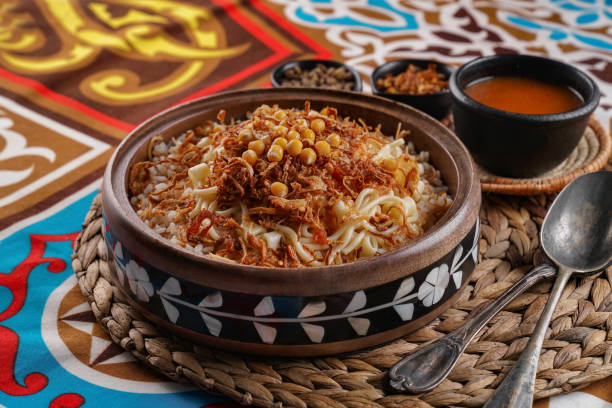

Culinary region
North Africa
From the Nile valley to the Atlas mountains, North African cooking brings together bread, beans, fresh herbs and warm spices like cumin, coriander and ras el hanout. Many dishes are simmered slowly and shared from one pot at the centre of the table.
Staples
- Wheat, as flatbread and couscous
- Fava beans, slow-cooked into Egyptian ful medames
- Rice and lentils, the base of koshari
- Leafy greens like jute leaves for molokhia
- Olives and preserved lemons, especially in Morocco
Cooking techniques
- Frying garlic and coriander in ghee to finish a dish
- Slow-cooking in a cone-shaped clay tagine
- Steaming couscous over a simmering stew
- Stewing beans gently for hours
Dishes to try

Molokhia
Egypt, Jute-leaf soup finished with garlic and coriander
View recipe →
Koshari
Egypt, Rice, lentils, pasta and tomato sauce

Tagine
Morocco, Slow cooked in a clay pot